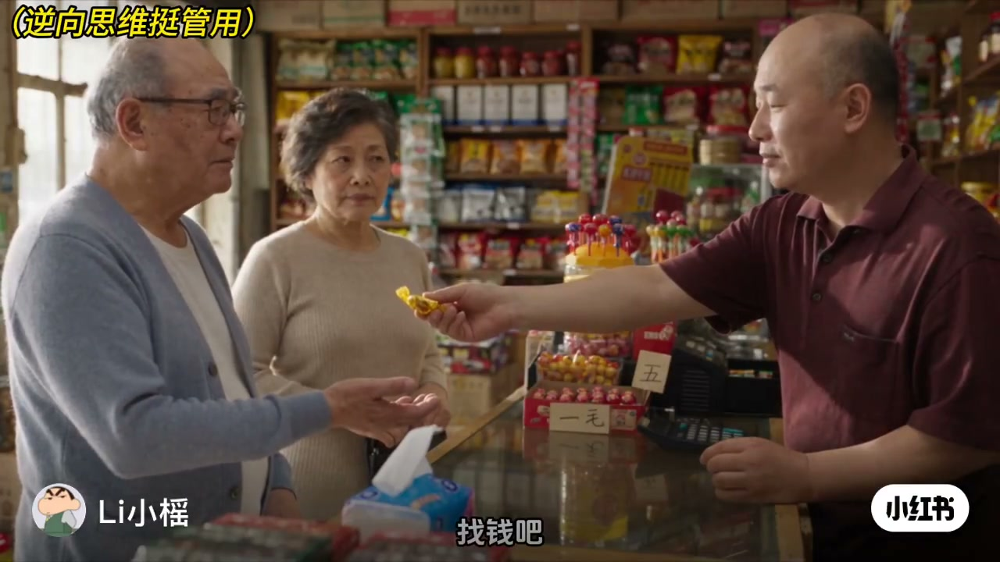
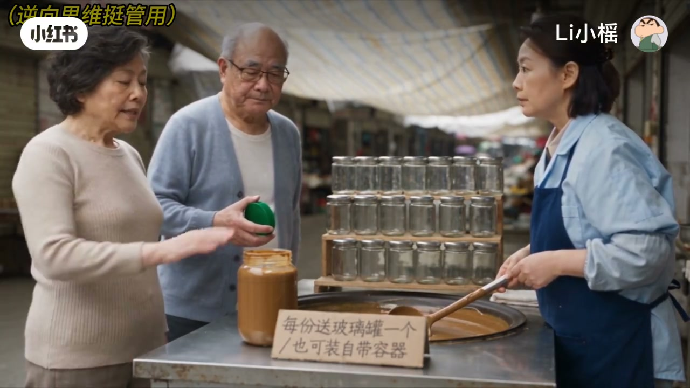
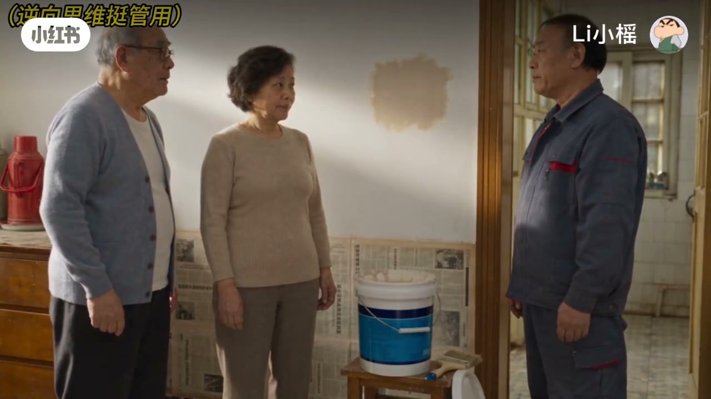
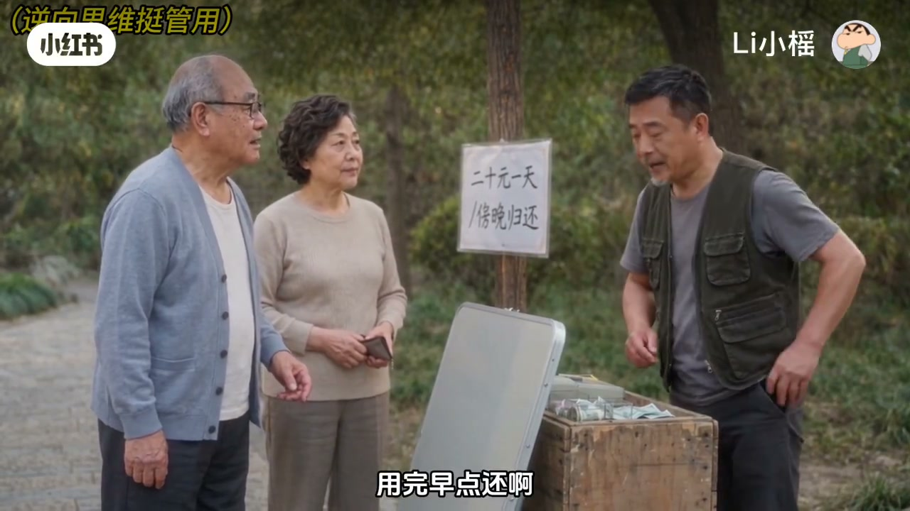
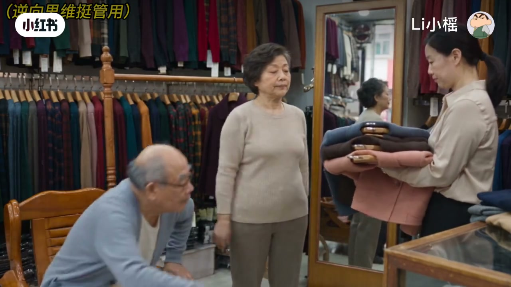

内容要点
「Li小榣」双人情景段子：夫妻俩在买糖找零、打酱带罐、买漆留桶、租麻将桌、买衣服五场小戏里，把店家的规则话术反将一军——不是鸡贼炫耀，而是用对方自己定的计价逻辑闭环。口播清晰，几乎无字幕依赖。
知识结构
没五毛找零就给糖；对方说糖不能当钱，反问「你找我就算钱」。
自带罐仍要店家「白送」空罐；店家改多打酱换不拿空罐。
用一点也按整桶计价，于是要求剩漆盖好带走；「当板凳也行」。
按天租桌就改成下午打牌用满一天；夸一件买一件，发现领子坏才叫「看出毛病」。
笑点全在「按你的规则算到底」：计价单位、赠品边界、租期口径一旦被咬死，店家只能让步或改口。
00:00-01:15找零、空罐与开桶价
第一场：买东西要找五毛，店家没零钱改给糖；媳妇咬住「你找我就算钱，我给你就不算了」，对方只好认。第二场：打酱自带罐还要店家「白送」的空罐装辣椒面；店家改口多打酱换不拿空罐，交易瞬间换成「罐子换成酱」。
第三场：油漆只蘸一点却「开桶就是一桶的钱」，于是要求把剩漆盖好带走——「拿它当板凳做也行」。店家只好改按用料算，桶仍被带走。三段都是把模糊人情价钉成可执行条款。



01:15-02:03租期一天与夸一件买一件
租麻将桌：只要一个钟头，店家坚持按天二十；夫妻立刻改成下午两点留桌、下午打牌晚上还——既然一租就一天，就用满一天。店家只好退回「一个钟头准时还」。
收尾买衣：老伴说「你穿啥都好」，媳妇宣布「他夸一件，我买一件」；真看见领子坏了，才补刀「现在看出毛病了」。标题「老伴儿你真聪明」落在最后这句神助攻上。


完整转录（36段）
以下文本由 Whisper medium 模型自动转录，可能存在少量识别误差，已尽可能修正。
我不吃糖,找钱吧
没五毛的了,这糖也五毛,一样
那再买包纸,这五毛,加这五毛
糖哪能当钱花呀
你找我就算钱,我给你就不算了
行行,拿着吧
我们带罐了,能便宜点吗
就这价,玻璃罐白送,不值钱,不能扣
那正好,酱装我们这个,送的空罐也拿上
你带罐了,还要我的
一个是我们的,一个是你送的
回去装辣椒面
要不我给你多打点酱,空罐别拿了
行,罐子换成酱
就用这一点,材料钱能少算点吗
开桶就是一桶的钱
行,那剩下的漆盖好,给我们留下
媳妇儿,咱家留这么大桶
剩这么多,你们也用不上
你都按一桶卖我了,我拿它当板凳做也行啊
那按用料的算,桶我带走
就用一个钟头,十块行不
不按钟头租,一天二十,用完早点还啊
下午两点,那桌给你留着,放心
行,那今天不赶了
下午在这儿打牌,晚上还
你们不是就用一个钟头
你不是一租就一天
一个钟头,准时还啊
到底哪件好
都好,你穿啥都好
那全包上,他夸一件,我买一件
媳妇儿,这件领子都掉这儿了,要它干啥
现在看出毛病了
这个精神
那就这个